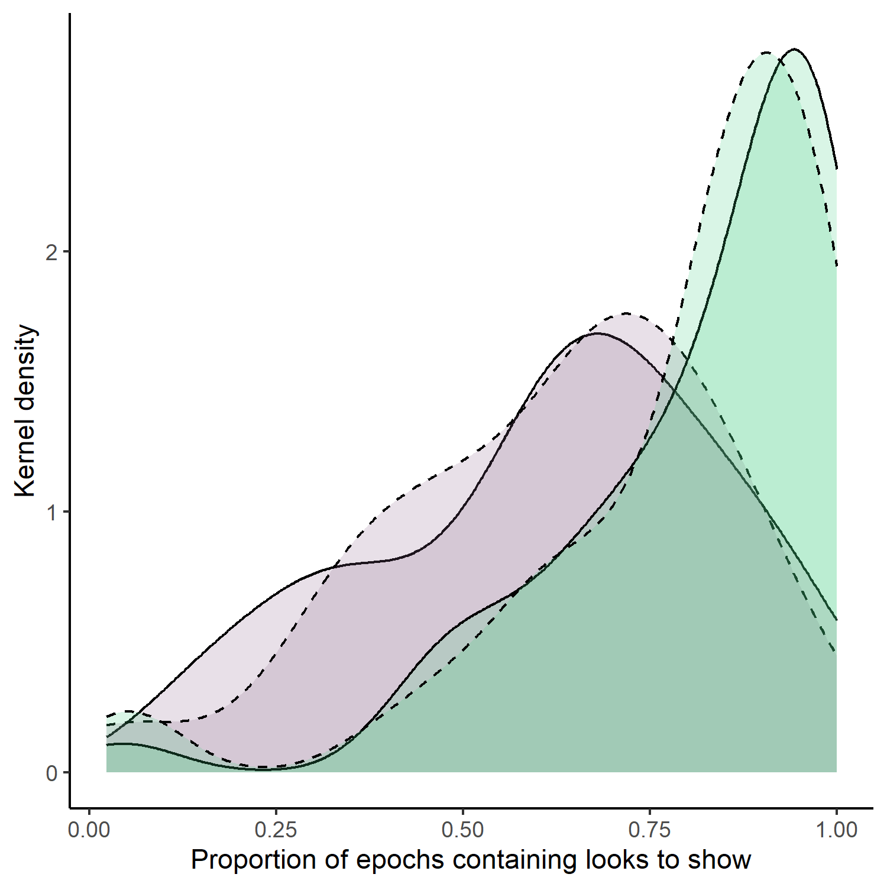

5 Open peer review
Introduction
Neural Style Transfer (NST) is een algortime methode om de inhoud van een afbeelding te combineren met de stijl van een andere afbeelding. Het resultaat is een nieuwe afbeelding die de inhoud van de ene afbeelding combineert met de stijl van de andere. Dit methode kan toegepast worden op proefdieren bijvoorbeeld visuele voorkeuren te manipuleren. In het onderzoek van Héjja-Brichard et al. (2024) wordt NST gebruikt om visuele voorkeuren van vissen te bestuderen door patronen van vissen te manipuleren. De studie onderzoekt de evolutie van dierlijke signaalontwerpen en de aantrekkelijkheid van visuele signalen in relatie tot hun natuurlijke habitat.
In deze review maken we gebruik van het onderzoek van Hejja-Brichard over het testen van voorkeur van vissen voor kleurpatronen. Hiervoor wordt er gebruik gemaakt van dit artikel, genaamd “Using Neural Style Transfer to study the evolution of animal signal design: A case study in an ornamented fish”. Het artikel wordt gescoord met behulp van de ‘Repita’-criteria. Door gebruik te maken met de criteria, kunnen we reproduceerbaarheidsproblemen identificeren in wetenschappelijke publicatie.
| Transparency_Criteria | Definition | Response_Type |
|---|---|---|
| Study Purpose | A concise statement in the introduction of the article, often in the last paragraph, that establishes the reason the research was conducted. Also called the study objective. | Binary |
| Data Availability Statement | A statement, in an individual section offset from the main body of text, that explains how or if one can access a study’s data. The title of the section may vary, but it must explicitly mention data; it is therefore distinct from a supplementary materials section. | Binary |
| Data Location | Where the article’s data can be accessed, either raw or processed. | Found Value |
| Study Location | Author has stated in the methods section where the study took place or the data’s country/region of origin. | Binary; Found Value |
| Author Review | The professionalism of the contact information that the author has provided in the manuscript. | Found Value |
| Ethics Statement | A statement within the manuscript indicating any ethical concerns, including the presence of sensitive data. | Binary |
| Funding Statement | A statement within the manuscript indicating whether or not the authors received funding for their research. | Binary |
| Code Availability | Authors have shared access to the most updated code that they used in their study, including code used for analysis. | Binary |
‘Repita’-criteria
Van het artikel stelt de hypothese van ‘sensory drive’ dat dieren signalen ontwikkelen die aangepast zijn aan hun omgeving. De resultaten ondersteunt de hypothese en wijzen erop dat de vissen de neiging hebben om visuele patronen te verkiezen die overeenkomen met hun natuurlijke leefomgeving. Bovendien toont het onderzoek aan dat kunstmatige intelligentie effectief kan worden ingezet om hypotheses over dierlijk gedrag te testen. Echter, het rapport mist specifieke gegevens die kunnen worden opgenomen om de bevindingen te ondersteunen.
| Transparency_Criteria | Definition | Response_Type |
|---|---|---|
| Study Purpose | A concise statement in the introduction of the article, often in the last paragraph, that establishes the reason the research was conducted. Also called the study objective. | yes |
| Data Availability Statement | A statement, in an individual section offset from the main body of text, that explains how or if one can access a study’s data. The title of the section may vary, but it must explicitly mention data; it is therefore distinct from a supplementary materials section. | no |
| Data Location | Where the article’s data can be accessed, either raw or processed. | DOI: 10.1101/2023.03.13.532060 |
| Study Location | Author has stated in the methods section where the study took place or the data’s country/region of origin. | yes |
| Author Review | The professionalism of the contact information that the author has provided in the manuscript. | not in manuscript, but in author information |
| Ethics Statement | A statement within the manuscript indicating any ethical concerns, including the presence of sensitive data. | yes |
| Funding Statement | A statement within the manuscript indicating whether or not the authors received funding for their research. | yes |
| Code Availability | Authors have shared access to the most updated code that they used in their study, including code used for analysis. | no |
R code
Naast een wetenschappelijke artikel, wordt ook de reproduceerbaarheid van R code papers beoordeelt. In deze review maken we gebruik van het onderzoek van Kragness and Cirelli (2021) over het gedrag van baby’s om verschillende aspecten, interacties en emotionele reacties tijdens muzikaal concert. Hiervoor wordt er gebruik gemaakt van dit artikel, genaamd “A concert for babies: Attentional, affective, and motor responses in an infant audience”.
Na het bestuderen van het script lijkt het er inderdaad op dat het gaat om een onderzoeksanalyse naar associaties tussen verschillende aspecten tijdens het afspelen van muziek. Het voert statistische analyses uit, zoals correlatietests, en genereert visualisaties. Op schaal van 1(very bad)-5(very good), zou ik het script een 4 geven op basis van leesbaarheid. De codes zijn over het algemeen leesbaar, goed gestructureerd en georganiseerd met comments, maar er kunnen meer comments komen die ook meer uitleggen over de codes.
Review
Bij het runnen van het script maar ik tegen aantal kleine errors tegen. Bij het inladen van de data miste er een pad in de set working directory funtie. Dit werd vervolgens verwezen naar de folder ‘les4’. Bij de chunk Demographics werden de kolommen Gender en BabyMusiClass niet gevonden als object voor het tellen in de dataframe df.wide. BabyMusiClass heb ik aangepast naar df.wide$ BabyMusiClass. De kolom Gender is character en niet een factor, waardoor het tellen moeilijk gaat. Dit heb ik aangepast naar table(df.wide$Gender), zodat je in console de aantallen geslacht te zien krijgt.
Op schaal van 1(very bad)-5(very good), zou ik het script een 4 geven op basis van reproduceerbaarheid. De codes die aangepast moesten worden, waren gemakkelijk op te lossen en begrijpelijk, zoals het verwijzen naar een pad/map. De visualisaties werden als png-bestanden geleverd en de vereiste librarys staan aan het begin van het markdown-bestand.
Hieronder zie je een stukje van het script voor het genereren van een geom_density plot. Dit plot verdient een score van 5 voor reproduceerbaarheid.
png("attentionDensity.png", units="in", width=5, height=5, res=300)
dens.perc <- ggplot(df, aes(BabyAttShow.Prop,fill = SongCond, linetype=IntCond),..scaled..) + geom_density(alpha = 0.2)+theme_classic()+
scale_linetype_manual(values=c("solid", "dashed"))+
scale_fill_manual(values=c("plum4","seagreen3"))+
xlab("Proportion of epochs containing looks to show")+
ylab("Kernel density")+
theme(legend.position = "none")
dens.perc
dev.off()